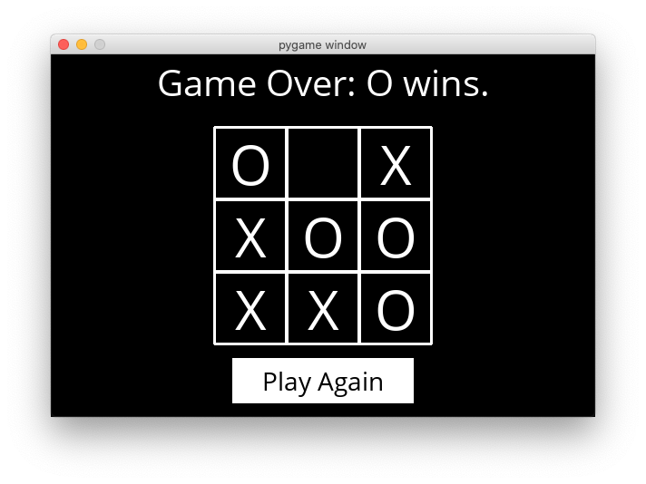

Tic-Tac-Toe
The latest version of Python you should use in this course is Python 3.12.
Using Minimax, implement an AI to play Tic-Tac-Toe optimally.

When to Do It
How to Get Help
- Ask questions via Ed!
- Ask questions via any of CS50’s communities!
Getting Started
- Download the distribution code from https://cdn.cs50.net/ai/2023/x/projects/0/tictactoe.zip and unzip it.
- Once in the directory for the project, run
pip3 install -r requirements.txtto install the required Python package (pygame) for this project.
Understanding
There are two main files in this project: runner.py and tictactoe.py. tictactoe.py contains all of the logic for playing the game, and for making optimal moves. runner.py has been implemented for you, and contains all of the code to run the graphical interface for the game. Once you’ve completed all the required functions in tictactoe.py, you should be able to run python runner.py to play against your AI!
Let’s open up tictactoe.py to get an understanding for what’s provided. First, we define three variables: X, O, and EMPTY, to represent possible moves of the board.
The function initial_state returns the starting state of the board. For this problem, we’ve chosen to represent the board as a list of three lists (representing the three rows of the board), where each internal list contains three values that are either X, O, or EMPTY.
What follows are functions that we’ve left up to you to implement!
Specification
Complete the implementations of player, actions, result, winner, terminal, utility, and minimax.
- The
playerfunction should take aboardstate as input, and return which player’s turn it is (eitherXorO).- In the initial game state,
Xgets the first move. Subsequently, the player alternates with each additional move. - Any return value is acceptable if a terminal board is provided as input (i.e., the game is already over).
- In the initial game state,
- The
actionsfunction should return asetof all of the possible actions that can be taken on a given board.- Each action should be represented as a tuple
(i, j)whereicorresponds to the row of the move (0,1, or2) andjcorresponds to which cell in the row corresponds to the move (also0,1, or2). - Possible moves are any cells on the board that do not already have an
Xor anOin them. - Any return value is acceptable if a terminal board is provided as input.
- Each action should be represented as a tuple
- The
resultfunction takes aboardand anactionas input, and should return a new board state, without modifying the original board.- If
actionis not a valid action for the board, your program should raise an exception. - The returned board state should be the board that would result from taking the original input board, and letting the player whose turn it is make their move at the cell indicated by the input action.
- Importantly, the original board should be left unmodified: since Minimax will ultimately require considering many different board states during its computation. This means that simply updating a cell in
boarditself is not a correct implementation of theresultfunction. You’ll likely want to make a deep copy of the board first before making any changes.
- If
- The
winnerfunction should accept aboardas input, and return the winner of the board if there is one.- If the X player has won the game, your function should return
X. If the O player has won the game, your function should returnO. - One can win the game with three of their moves in a row horizontally, vertically, or diagonally.
- You may assume that there will be at most one winner (that is, no board will ever have both players with three-in-a-row, since that would be an invalid board state).
- If there is no winner of the game (either because the game is in progress, or because it ended in a tie), the function should return
None.
- If the X player has won the game, your function should return
- The
terminalfunction should accept aboardas input, and return a boolean value indicating whether the game is over.- If the game is over, either because someone has won the game or because all cells have been filled without anyone winning, the function should return
True. - Otherwise, the function should return
Falseif the game is still in progress.
- If the game is over, either because someone has won the game or because all cells have been filled without anyone winning, the function should return
- The
utilityfunction should accept a terminalboardas input and output the utility of the board.- If X has won the game, the utility is
1. If O has won the game, the utility is-1. If the game has ended in a tie, the utility is0. - You may assume
utilitywill only be called on aboardifterminal(board)isTrue.
- If X has won the game, the utility is
- The
minimaxfunction should take aboardas input, and return the optimal move for the player to move on that board.- The move returned should be the optimal action
(i, j)that is one of the allowable actions on the board. If multiple moves are equally optimal, any of those moves is acceptable. - If the
boardis a terminal board, theminimaxfunction should returnNone.
- The move returned should be the optimal action
For all functions that accept a board as input, you may assume that it is a valid board (namely, that it is a list that contains three rows, each with three values of either X, O, or EMPTY). You should not modify the function declarations (the order or number of arguments to each function) provided.
Once all functions are implemented correctly, you should be able to run python runner.py and play against your AI. And, since Tic-Tac-Toe is a tie given optimal play by both sides, you should never be able to beat the AI (though if you don’t play optimally as well, it may beat you!)
Hints
- If you’d like to test your functions in a different Python file, you can import them with lines like
from tictactoe import initial_state. - You’re welcome to add additional helper functions to
tictactoe.py, provided that their names do not collide with function or variable names already in the module. - Alpha-beta pruning is optional, but may make your AI run more efficiently!
Testing
If you’d like, you can execute the below (after setting up check50 on your system) to evaluate the correctness of your code. This isn’t obligatory; you can simply submit following the steps at the end of this specification, and these same tests will run on our server. Either way, be sure to compile and test it yourself as well!
check50 ai50/projects/2024/x/tictactoe
Execute the below to evaluate the style of your code using style50.
style50 tictactoe.py
Remember that you may not import any modules (other than those in the Python standard library) other than those explicitly authorized herein. Doing so will not only prevent check50 from running, but will also prevent submit50 from scoring your assignment, since it uses check50. If that happens, you’ve likely imported something disallowed or otherwise modified the distribution code in an unauthorized manner, per the specification. There are certainly tools out there that trivialize some of these projects, but that’s not the goal here; you’re learning things at a lower level. If we don’t say here that you can use them, you can’t use them.
How to Submit
- Visit this link, log in with your GitHub account, and click Authorize cs50. Then, check the box indicating that you’d like to grant course staff access to your submissions, and click Join course.
-
Install Git and, optionally, install
submit50. - If you’ve installed
submit50, executesubmit50 ai50/projects/2024/x/tictactoeOtherwise, using Git, push your work to
https://github.com/me50/USERNAME.git, whereUSERNAMEis your GitHub username, on a branch calledai50/projects/2024/x/tictactoe.
If you submit your code directly using Git, rather than submit50, do not include files or folders other than those you are actually instructed to modify in the specification above. (That is to say, don’t upload your entire directory!)
Work should be graded within five minutes. You can then go to https://cs50.me/cs50ai to view your current progress!